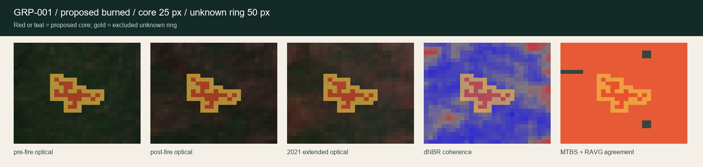
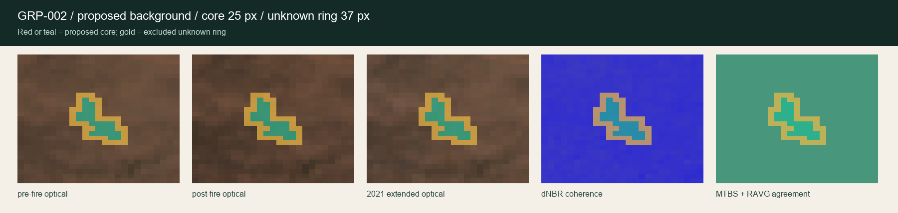

Review each exact unreviewed core and its excluded unknown ring against actual pre-fire, post-fire, extended optical, dNBR, MTBS, and RAVG evidence. Answer yes, no, or uncertain.
Experimental BurnLens candidate review. Not a label, dataset, ground truth, official wildfire information, or emergency guidance. Official sources govern.
2exact candidates
0 / 2decisions
0labels promoted
Contract
Yes is necessary, not sufficient. No and uncertain stay excluded.
Read before deciding
The fixed dNBR bin is a coherence partition, not a universal burn threshold. MTBS/RAVG agreement and the multi-signal background route are candidate evidence, not independent ground truth. Gold pixels are uncertainty rings and cannot be approved by this surface.
Exact-byte custody: export once to the hash-named response file. Do not overwrite, rename, or edit it. A later checkpoint must preserve and verify those exact bytes before considering any label.
0 of 2 decisions
GRP-001 / Green Ridge
Is this exact region a usable prototype burned label candidate?
unreviewed
Why proposed: MTBS dNBR6 classes 2-4 and RAVG CBI4 classes 2-4 agree; pre/post dNBR is finite
The fixed dNBR partition is an evidence-coherence rule, not a universal burn or severity threshold.
MTBS/RAVG agreement and the multi-signal background route are candidate evidence, not independent ground truth.

Exact raster SHA-256 6a1244b9f84917699100be0621c6e2916b6345a734e904e7b1c9b2f242af2f8f. Proposed class is derived evidence, not truth. Gold ring pixels stay unknown regardless of this answer.
GRP-002 / Green Ridge
Is this exact region a usable prototype background label candidate?
unreviewed
Why proposed: Three-scene clear/numeric evidence; transferred four-signal near-anniversary stability; at least 7 of 9 stable neighbors; MTBS and RAVG encoded class 0 agreement; outside the 60 m source-boundary uncertainty buffer. No single signal is sufficient.
The fixed dNBR partition is an evidence-coherence rule, not a universal burn or severity threshold.
MTBS/RAVG agreement and the multi-signal background route are candidate evidence, not independent ground truth.

Exact raster SHA-256 0367f034a3df187a04523b9179a82be7e563a8a4bc00a7683669c9530a2812b8. Proposed class is derived evidence, not truth. Gold ring pixels stay unknown regardless of this answer.
Final attestation
Not claimed
independent ground truth or inter-rater agreement
field validation, official status, or endorsement
dataset, split, baseline, model, accuracy, operational, or emergency readiness